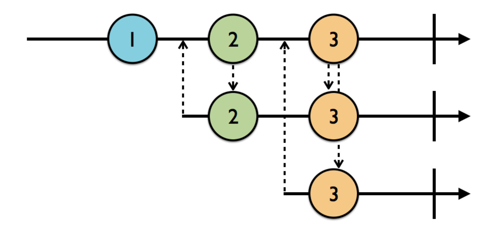
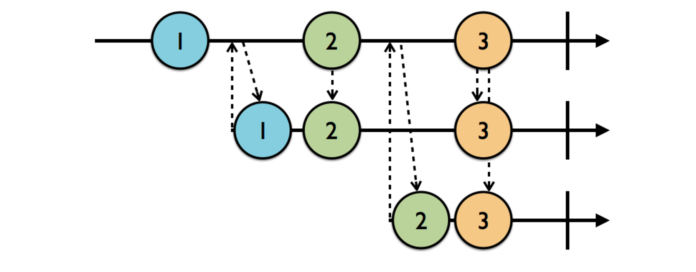
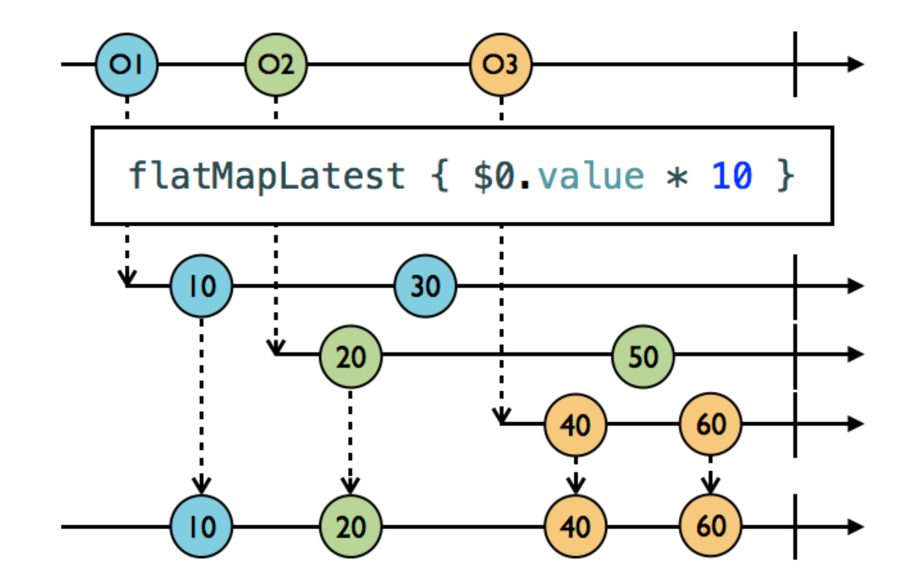
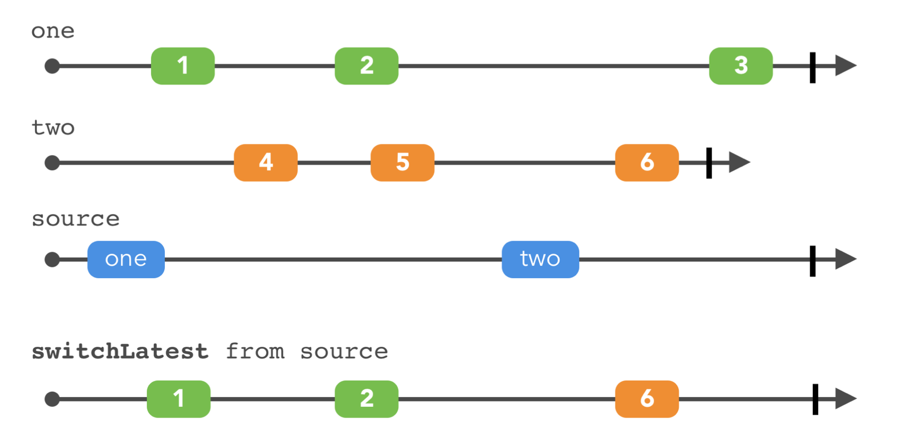

RxSwift
Basic
The logo of ReactiveX is a electric eel（电鳗）.
Core issues with writing asynchronous code,
- the order in which pieces of work are performed
- shared mutable data.
Side effect, any change to the state outside of the current scope.
Observables
Observable<T> provides the ability to asynchronously produce a sequence of events that can “carry” an immutable snapshot of data T. It allows classes to subscribe for values emitted by another class over time.
An Observable is just a sequence.
There are many ways to create a Observable, just, of, create, etc.
ObservableType protocol
An observable can emmit three types of events,
nextcompletederror
When an Obsservable emmits completed or error event, it can no longer emit events, that means, it's life is done.
Subjects
Subjects act as both an observable and as an observer. The subject received .next events, and each time it received an event, it turned around and emitted it to its subscriber.
PublishSubject
The PublishSubject only emits to current subscribers. But when a PublishSubject send a stop event(.completed or .error), the subscribe after that stop can also receive the event.

BehaviorSubject
BehaviorSubjects work similarly to PublishSubjects, except they will replay the latest .next event to new subscribers.
You have to specify the default value when create the BehaviorSubject.

ReplaySubject
It will then replay a buffer to new subscribers.
You have to specify the buffer size when create the ReplaySubject.

Variable
A Variable wraps a BehaviorSubject and stores its current value as state. But it's value can not generate .error.
Operators
Like transformation operators for array(map, filter, reduce), you can apply these simlar concept to Observables. They don't cause side effects.
Check out the RxMarbles, it shows lots of operators.
Fliter
Ignore
ignoreElements, it'll ignore all the.nextevents, only let the.completed&.errorevents goelementAt(2), only pass the third eventfilter { predicate closure }, it'll only pass the events which pass the predicate closure, just like thefilterin the Swift Standard Libray
Skip
skip(2), skip the first 2 elementsskipWhile { predicate closure }, it'll skip elements until one element has pass the predicate closure, if one element has passed it, theskipWhilewill not work anymoreA.skipUntil(B), A & B are bothObservables, A's elements will be skipped until B emmits a element
Take
take(2), only take the first 2 elementstakeWhile { predicate closure }, likeskipWhilebut opposite, it'll only take the elements pass the predicate closure, but once a element won't pass the condition, the operator won't work, it won't take any elementsA.takeUntil(B), it'll take A's elements until B emmits a element, it's often used like this,someObservable.takeUntil(self.rx.deallocated)
Distinct
distinctUntilChanged, it prevents sequential duplicates,(A-A-A-B-B-A-B).distinctUntilChanged->A-B-A-B
Transform
Transform elements
toArray, transform individual elements in to an arraymap, just like the Swiftmap, but forObservables
Transform inner Observables
flatMap, Projects each element of an observable sequence to an observable sequence and merges the resulting observable sequences into one observable sequence.ObservableinsideObservable, we flatten that into one sequence.

flatMapLatest, likeflatMap, but when a newObservableofObservablescomes, the previouseObservableofObservablesare ignored, it'll switch to the latest one

Combine
startWith, prefix anObservablewith the given initial valueconcat,A.concat(B)it waits A to complete, then subscribe to Bmerge, a mergedObservablesubscribes to each of the sequence, when it's innerObservables emmits events, it notify the outter observers.mergein RxMarblescombineLatest,combineLatestin RxMarbleszip, it waitied for each to emit a new value, just like a zipperzipwithLatestFrom,A.withLatestFrom(B)when A emits a event, it will take the B's latest valuesampleamb,A.amb(B)who comes last, who get unsubscribedswitchLatest, images are better than words

reduce, like normalreducein Swift, but forObservables, but it'll only be called when theObservablecompleted
1 2 3 4 5 | let source = Observable.of(1, 3, 5, 7, 9) let observable = source.reduce(0, accumulator: +) observable.subscribe(onNext: { value in print(value) }) // 25 |
scan
1 2 3 4 5 | let source = Observable.of(1, 3, 5, 7, 9) let observable = source.scan(0, accumulator: +) observable.subscribe(onNext: { value in print(value) }) // 1 4 9 16 25 |
Schedulers
Just like dispatch queues.
Credits
- The RxSwift Book